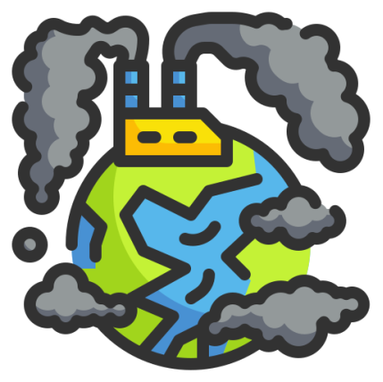
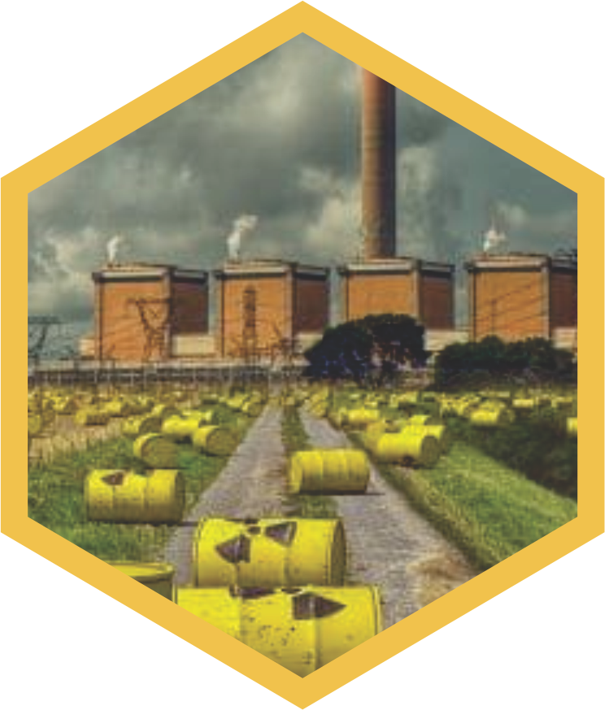
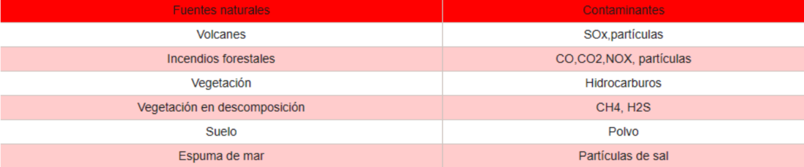
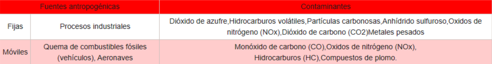
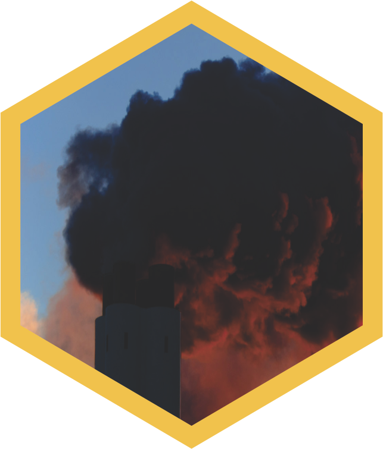
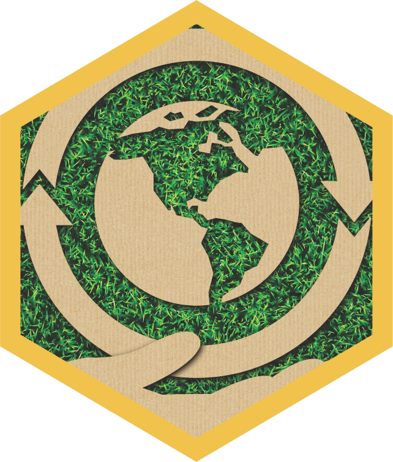

ÍNDICE
2
INTRODUCCIÓN AL TEMA.png)
3
MARCO TEÓRICO 4
MARCO TEÓRICO5
MATERIALES Y MÉTODOS.png)
7
MATERIALES Y MÉTODOS 8
CONCLUSIONES Y RESULTADOS.png)
INTRODUCCIÓN AL TEMA
Como es de saberse, a lo largo de la historia de la humanidad han existido
múltiples acontecimientos de gran magnitud que han marcado un antes y
un después dentro de dicha línea de tiempo, uno de los más importantes
fue la revolución industrial. La revolución industrial trajo consigo
una nueva forma en la que el mundo funcionaría, pues entre sus múltiples
cambios, se puede resaltar que se pasó de un modo de producción a
otro, el surgimiento de grandes fábricas, cambios en la
estructura económica y social, y el éxodo masivo
de habitantes de las áreas rurales hacia las ciudades.
Sin embargo, esta nueva
etapa de la humanidad
creó uno de los más grandes
problemas al que se enfrenta el
mundo actual: La contaminación.
Por contaminación se entiende que es
“la introducción en el medio natural
de agentes de tipo físico, químico y
biológico, que alteran las condiciones
ambientales, provocando efectos
dañinos para la salud, el bienestar y
la habitabilidad de la vida animal y

vegetal en general”; como es de
suponerse existen diversos tipos de
contaminación, pero para el presente
trabajo se tomó como base aquella que
genera la mala clasificación de los
residuos específicamente en el Instituto
Carlos Gracida.
Por otra parte, se debe mencionar que
la intención de querer atender dicho
problema surgió como una respuesta
ante la necesidad de llevar a cabo una
mejor gestión de los residuos sólidos
que generan los estudiantes del
Instituto Carlos Gracida, esto no
solamente para genera una mejor
conciencia ecológica, sino
que de igual manera para
impulsar dentro de la
institución otra clase de
proyectos ecológicos, tales
como la generación de
composta o la creación de
papel a partir de papel reciclado.
En ese sentido a lo largo de la
presente revista se tocarán temas
relacionados al tema con el fin de dar
a conocer el proyecto así como para
mostrar el proceso e impacto del
mismo.
MARCO TEÓRICO
CONTAMINACIÓN ATMOSFÉRICA
Uno de los mayores problemas a los que se presenta la humanidad en la actualidad es la contaminación, pues esta afecta la salud de los seres humanos y otros animales, sino también la calidad de vida de todas las especies que habitan en el planeta. En ese sentido uno de los tipos de contaminación que más nos debe de preocupar es la atmosférica, la cual consiste en la presencia de materias o formas de energía en el aire que pueden suponer un riesgo, daño o molestia de diferente gravedad para los seres vivos y para el medio ambiente y que entre sus múltiples causas se encuentra la incorrecta separación de residuos.
TIPOS DE CONTAMINANTES
Los contaminantes se clasifican en dos principales ramas:
1.-EMISIONES NATURALES(PRIMARIAS)
Su origen son los procesos propios de la naturaleza, tales como
erupciones volcánicas, la actividad biológica de microorganismos, los
huracanes, tornados, incendios naturales, etc.
Estas emisiones a su vez se dividen de la siguiente manera
 2.- EMISIONES ANTROPOGÉNICAS (SECUNDARIAS)
Deben su origen a la actividad humana, originándose las principales emisiones por combustión
de combustibles fósiles, procesos industriales, tratamientos y eliminación de residuos, etc.
Estas emisiones se dividen a su vez de la siguiente manera:
 ¿QUÉ GENERA LA CONTAMINACIÓN ATMOSFÉRICA?

Como se ha mencionado,
este tipo de contaminación genera efectos negativos como lo son:
ADELGAZAMIENTO DE LA CAPA DE OZONO: La reducción de la capa de ozono aumenta el nivel de radiación ultravioleta que llega a la superficie de la tierra, lo cual, a su vez, puede aumentar las probabilidades de sobreexposición a los rayos ultravioleta y los problemas de salud asociado con ello.
EFECTO INVERNADERO: Es un fenómeno natural por el que unos gases determinados que componen la atmosféra retienen parte de la energía solar reflejada por el suelo, absorbiéndola y transformándola en un movimiento molecular interno que produce un aumento de la temperatura.
CAMBIO CLIMÁTICO: Se refiere a los cambios a largo plazo de las temperaturas y los patrones climáticos, en el que estos cambios pueden ser naturales o causados por el ser humano.
En el humano, los gases y elementos que genera la contaminación atmosférica pueden causar en el humano: dolor en el pecho, palpitaciones, fatiga, enfermedades coronarias e insuficiencia cardiaca.
MATERIALES Y MÉTODOS
Partiendo de la problemática de la
incorrecta separación de los residuos
tanto en el mundo como en los estados de
México, en el Instituto Carlos Gracida se
promovió un programa que buscó
corregir dicha situación y para el cuál se
tomaron en cuenta los siguientes
objetivos, métodos y materiales.
OBJETIVOS
Un proyecto no funciona del todo si es
que no se sustenta en objetivos, en ese
sentido, el proyecto mencionado retomó
las siguientes metas:
· Aprender la correcta clasificación
de los desechos
· Concientizar a los a los estudiantes
sobre la problemática y el papel
que juegan en la solución de esta.
· Lograr que los estudiantes, y en
general la comunidad
educativa, entiendan el
objetivo de la campaña
de concientización y
se hacen participes
de este.
MATERIALES
· Computadora
· Celular
· Recursos económicos
· Impresora
· Tinta
· Durex
· Papel contac
· Papel adhesivo
MÉTODOS
Hablando específicamente de los métodos
utilizados para llevar a cabo el proyecto
planeado, se debe mencionar que fue
necesaria la construcción de un plan de
acción el cual fue pensado en el involucrar
a los alumnos del instituto principalmente
mediante las redes sociales, es por ello
que se creó una cuenta de instagram para
que los alumnos sigan la cuenta del
proyecto y se enteren de los objetivos así
como de las nuevas propuestas a seguir
dentro de la escuela.
Por otra parte, se decidió que la mejor
manera para generar conciencia sobre el
buen manejo de los residuos sólidos en el
ICAGRA es mediante la creación de
carteles de concientización y mediante
imponer una nueva forma de
clasificar la basura con base
en los botes existentes
dentro del campus.
En ese sentido, y
tomando en cuenta
una investigación de
campo, se acordó proponer
que la nueva forma en la que se
clasificarán los residuos será de la
siguiente manera y con las siguientes
etiquetas:
-Residuos de alimentos (incluyendo
servilletas)
-Cartón, unicel, plástico e inorgánicos
-Materiales escolares (Incluyendo
cualquier material que tenga que ver con
lo desechado durante las clases)
-Papel (Incluyendo cualquier tipo de
papel)
Cabe resaltar que cada etiqueta será de
diferente color para la sencilla
identificación de las mismas.
Finalmente, se designó a un miembro del
equipo para que tuviera la tarea de ir a
los grupos de otros grados a platicar
sobre el proyecto con los demás alumnos y
para alentarlos apoyarlo e incluso unirse
a el mismo
CONCLUSIONES
Y RESULTADOS
CONCLUSIONES
Una vez llevado a cabo todo el proceso necesario para que el proyecto se realizara de manera exitosa, se puede afirmar que de acuerdo a las actividades realizadas para encaminarlo causaron que se cumplieran los objetivos esperados del mismo, siendo así que con las nuevas etiquetas para la clasificación de la basura los alumnos van a distinguir una manera más fácil y eficaz de separar los desechos dentro de su institución, así como también se logró hacer conciencia y que los alumnos entendieran el proyecto mediante las pláticas en cada uno de los grupos del nivel preparatoria. Finalmente queda por decir que al no poder visualizar los futuros cambios que traerá consigo la nueva forma de separar los residuos, se espera que dentro de la institución se continúe con dicha práctica sustentable para que a futuro se genere un orden dentro de la misma escuela, una conciencia ecológica generalizada y sobre todo un aprendizaje que cause que los alumnos lleven prácticas
sustentables afuera de la institución y que generen cambios dentro de la sociedad estatal, nacional e incluso global.
RESULTADOS
Además de las metas alcanzadas anteriormente, es muy seguro que al menos en un pequeño grupos de estudiantes se haya generado una idea en relación a una nueva propuesta ecológica que podría ser aplicada de igual manera dentro de la institución e incluso fuera de ella; en ese sentido, se debe recalcar la importancia que tiene el atender dichas ideas e impulsarlas para mejorar la situación ambiental en el instituto.
